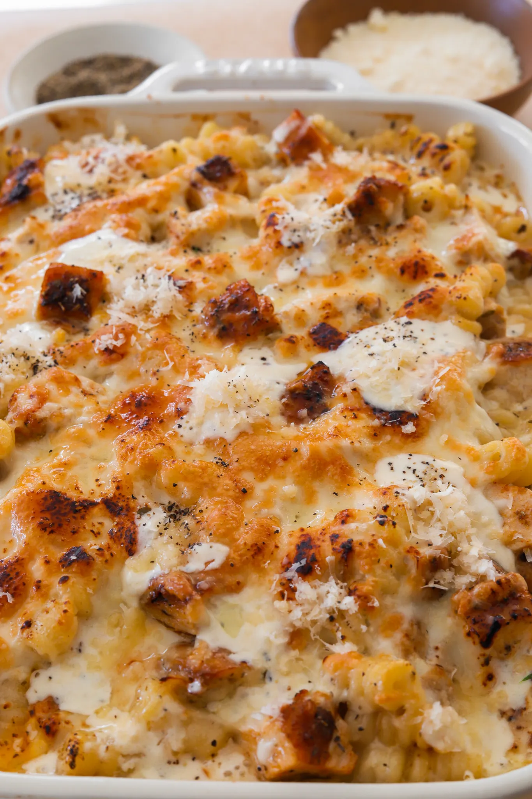
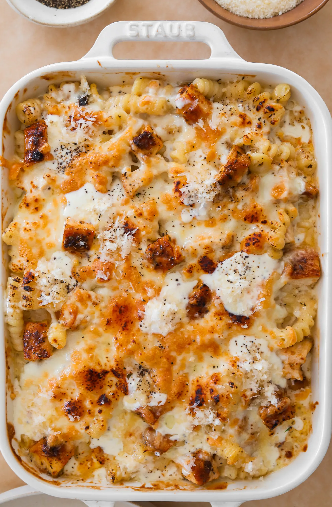

Dinner
Chicken Alfredo Pasta Bake

PREP TIME: 15 MINUTES
COOK TIME: 45 MINUTES
TOTAL TIME: 1 HOUR
YEILD: 5 TO 7
This Chicken Alfredo Pasta Bake is the ultimate cozy, cheesy comfort
food that's perfect for any night of the week. Tender chicken and
pasta are smothered in a creamy homemade Alfredo sauce, topped with
melted mozzarella, and baked to perfection. It's that dish you’ll
want to dig into immediately—warm, satisfying, and incredibly
delicious!
JUMP TO RECIPE
Chicken Alfredo Pasta Bake

INGREDIENTS
CHICKEN
-
1 Pound pf chicken breas, about 2 large breast
-
1 tablespoon olive oil
-
2 teaspoons italian seasoning
-
1 teaspoon lemon pepper
-
1 teaspoon smoked paprika
-
1 teaspoon garlic pepper
-
1 teaspoon salt
-
1/4 teaspoon black pepper
ALFREDO
-
3/4 cup unsalted butter
-
1 1/2 tablespoon fresh garlic, minced
-
3 cups heavy cream
-
2 1/4 teaspoons Italian seasoning
-
3/4 to 1 teaspoon salt, more to taste
-
dash of nutmeg
-
2 1/4 cups parmesan, freshly grated
-
3 tablespoons cream cheese
-
2 tablespoons fresh parsley, finely chopped
OTHER
-
16 ounces pasta of choice
-
salt, to boil pasta
-
2 cups shredded mozzarella cheese